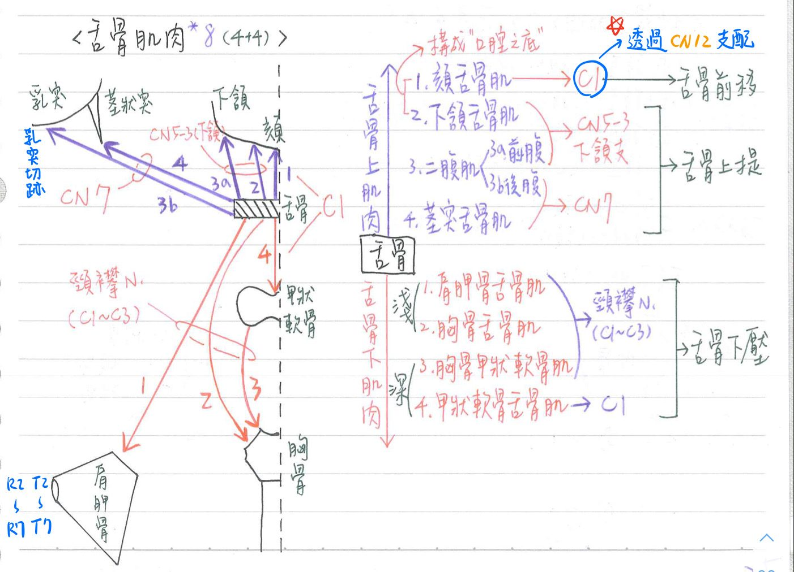

😝 肌肉系統：舌骨上/下肌群[背圖就有分了~]
舌骨上肌群(suprahyoid m.)：4條
| 肌肉 | 神經支配 | 運動 | 備註 |
|---|---|---|---|
| 頦舌骨肌(geniohyoid m.) | ★源自C1的纖維 →★★透過CN12支配 | ★舌骨前移 | |
| 下頷舌骨肌(mylohyoid m.) | ★★三叉N下頷支(V3) | 舌骨上提 ★下頷骨下壓 | |
| 二腹肌(digastric m.)—前腹 | ★三叉N下頷支(V3) | 舌骨上提 ★下頷骨下壓 | 較短，附著於： 下頷骨二腹肌窩 |
| 二腹肌(digastric m.)—後腹 | ★★★顏面N(CN7) | 舌骨上提 ★下頷骨下壓 | 較長，附著於： 顳骨乳突切跡 |
| 莖突舌骨肌(stylohyoid m.) | ★★★顏面N(CN7) | 舌骨上提 |
舌骨下肌群(infrahyoid m.)：4條
| 肌肉 | 神經支配 | 運動 | 備註 |
|---|---|---|---|
| 肩胛舌骨肌(omohyoid m.) | ★★★頸襻N(C1-C3) | 舌骨下壓 | 淺 |
| 胸骨舌骨肌(sternohyoid m.) | ★★頸襻N(C1-C3) | 舌骨下壓 | 淺 |
| ★胸骨甲狀肌(sternothyroid m.) | ★★頸襻N(C1-C3) | 舌骨下壓 | 深 |
| 甲狀舌骨肌(thyrohyoid m.) | ★C1 (和CN12伴行) | 舌骨下壓 | 深 |

📖 書本補充：與筆記不同或筆記沒寫到的地方
⚠️
以下為對照書本後整理，筆記原文未更動。標「筆記 vs 書」的是兩邊寫法不同、建議回頭確認的地方。
舌骨上肌群（p.535、p.549）
- 二腹肌：書寫作用＝下頷骨下降、舌骨往上和往後。
- 下頷舌骨肌：神經是到下頷舌骨肌的神經（V3 的分支，由下齒槽神經分出）；作用：支撐及提起口腔底部、提起舌骨、下頷骨下降。
- 筆記 vs 書：頦舌骨肌的作用，筆記只寫「舌骨前移」；書寫舌骨上提和往前，以及下頷骨下降。
- 書的說法：下頷舌骨肌和頦舌骨肌都是「舌骨固定時→下壓下頷骨；下頷骨固定時→舌骨往前」。
- 書的提示：頦舌骨肌在下頷舌骨肌的中線正上方，但兩者神經支配不同（C1 vs V3）。
- 莖突舌骨肌：顏面N，上提舌骨（與筆記一致）。附著在莖突上的三條肌肉：莖突舌骨肌（VII）、莖突舌肌（XII）、莖突咽肌（IX）。
舌骨下肌群（p.549、p.556）
- 筆記 vs 書：筆記四條都寫「舌骨下壓」。書上：
- 胸骨舌骨肌：下降舌骨
- 胸骨甲狀肌：下降甲狀軟骨和喉部（它附著在甲狀軟骨，不直接拉舌骨）
- 肩胛舌骨肌：下降並縮回舌骨和喉部
- 肩胛舌骨肌起自肩胛骨，止於舌骨；上下肌腹之間的中央肌腱有纖維連到鎖骨（112-1-9 解析）。
- 頸襻（ansa cervicalis，C1–C3）：上根＝C1、下根＝C2–C3；支配甲狀舌骨肌以外的舌骨下肌（胸骨舌骨、胸骨甲狀、肩胛舌骨）。
- 甲狀舌骨肌與頦舌骨肌：都是與舌下神經伴行的 C1（106-2-17、107-1-3）。
頸部的位置關係（p.548–549）
- 舌骨下肌的前面是頸深筋膜包圍層，後面是包住甲狀腺的氣管前層（108-1-18，見「頭頸部的三角們」補充）。
- 喉的外在肌：舌骨上肌群上提喉、舌骨下肌群下壓喉（p.567）。
📝 書中歷屆考題（點選答案作答）
107-2-18p.550
有關舌骨上肌 (suprahyoid muscles) 之敘述，下列何者正確？
110-1-20p.550
下列何者收縮，有助於下頷骨的下壓 (depression of mandible)？
💡 (A)(B)(C) 都是上提下頷骨的咀嚼肌。
112-1-9p.550
Omohyoid muscle 的起點位於何處？
💡 肩胛舌骨肌起自肩胛骨、附著到舌骨；中央肌腱有纖維連到鎖骨。
106-2-17p.557
下列何者不是由頸襻 (ansa cervicalis) 上、下根 (superior and inferior roots) 的分支支配？
💡 甲狀舌骨肌是由來自 C1 的神經（伴隨舌下神經）支配。
107-1-3p.511、p.557
下列何者由源自 C1 的神經透過舌下神經 (CN XII) 來支配？
💡 （書中 p.511 與 p.557 重複收錄此題）
105-1-11p.506
下列何者不控制附著於舌骨 (hyoid bone) 的肌肉？
💡 舌咽神經支配的莖突咽肌附著在咽壁上，不在舌骨。